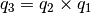

Quaternions and rotation¶
Implementation of quaternion algebra. Primarily for use with
rigid body dynamics, although the Orientation, Rotation
and Rotate routines can be useful in many other situations.
\begin{array}{c} i^2 = j^2 = k^2 = ijk = -1 \\ ij = k \quad jk = i \quad ki = j \end{array}
Module contents for quippy.quaternions:
Classes
Quaternion([a,b,c,d]) |
|
Functions
orientation(a1,b1,a2,b2,[correct_angle]) |
Given two vectors (a1 and b1), calculate the rotation quaternion that must be used to rotate them into two other vectors (a2 and b2). |
rotation(axis,angle) |
Many rotations can be collapsed into one, e.g. |
rotate(\*args, \*\*kwargs) |
Routine is wrapper around Fortran interface rotate containing multiple routines: |
-
class
quippy.quaternions.Quaternion([a, b, c, d])¶ Bases:
quippy.oo_fortran.FortranDerivedTypequaternion_initialise([a,b,c,d])
Parameters: a : input float, optional
b : input float, optional
c : input float, optional
d : input float, optional
References
Routine is wrapper around Fortran routine
__init__initialisedefined in file src/libAtoms/Quaternions.f95. Class is wrapper around Fortran typeQuaterniondefined in file src/libAtoms/Quaternions.f95.Methods
assignment(\*args, \*\*kwargs)Wrapper around Fortran interface assignmentcontaining multiple routines:is_same_fortran_object(other)Test if self and other point to the same Fortan object. print_([file])Parameters: rotate(qv,qr)Rotate a vector represented as a quaternion ( qv), using a given rotation quaternion (qr)rotate_quat(qv,qr)Rotate a vector represented as a quaternion ( qv), using a given rotation quaternion (qr)rotation_matrix(q_in)Return the equivalent rotation matrix of a (unit) quaternion rotation_parameters(q)Returns the angle and rotation axis of a (normalised) quaternion shallow_copy()Return a shallow copy of self. shallow_copy_from(other)Transform self into a shallow copy of other. -
assignment(*args, **kwargs)¶ Wrapper around Fortran interface
assignmentcontaining multiple routines:-
assignment(=)(r) Parameters: r (input float) – Returns: q – QuaternionobjectRoutine is wrapper around Fortran routine
quat_assign_realdefined in file src/libAtoms/Quaternions.f95.
-
assignment(=)(vect) Parameters: vect (input rank-1 array('d') with bounds (qp_n0)) – Routine is wrapper around Fortran routine
quat_assign_vectdefined in file src/libAtoms/Quaternions.f95.
-
-
print_([file])¶ Parameters: file : InOutputobject, optionalReferences
Routine is wrapper around Fortran routine
print_defined in file src/libAtoms/Quaternions.f95.
-
rotate(qv, qr)¶ Rotate a vector represented as a quaternion (
qv), using a given rotation quaternion (qr) This assumes that the rotation quaternion is properly normalisedqv = qr * qv * (.conj.qr)Parameters: qv :
Quaternionobjectqr :
QuaternionobjectReferences
Routine is wrapper around Fortran routine
rotate_quatdefined in file src/libAtoms/Quaternions.f95.
-
rotate_quat(qv, qr)¶ Rotate a vector represented as a quaternion (
qv), using a given rotation quaternion (qr) This assumes that the rotation quaternion is properly normalisedqv = qr * qv * (.conj.qr)Parameters: qv :
Quaternionobjectqr :
QuaternionobjectReferences
Routine is wrapper around Fortran routine
rotate_quatdefined in file src/libAtoms/Quaternions.f95.
-
rotation_matrix(q_in)¶ Return the equivalent rotation matrix of a (unit) quaternion
Parameters: q_in : QuaternionobjectReturns: ret_a : rank-2 array(‘d’) with bounds (3,3) References
Routine is wrapper around Fortran routine
rotation_matrixdefined in file src/libAtoms/Quaternions.f95.
-
rotation_parameters(q)¶ Returns the angle and rotation axis of a (normalised) quaternion
Parameters: q :
Quaternionobjecttheta : float
axis : rank-1 array(‘d’) with bounds (3)
References
Routine is wrapper around Fortran routine
rotation_parametersdefined in file src/libAtoms/Quaternions.f95.
-
-
quippy.quaternions.orientation(a1, b1, a2, b2[, correct_angle])¶ Given two vectors (
a1andb1), calculate the rotation quaternion that must be used to rotate them into two other vectors (a2andb2). The angle betweena1andb1must be the same asa2andb2, unlesscorrect_angleis present and trueParameters: a1 : input rank-1 array(‘d’) with bounds (3)
b1 : input rank-1 array(‘d’) with bounds (3)
a2 : input rank-1 array(‘d’) with bounds (3)
b2 : input rank-1 array(‘d’) with bounds (3)
correct_angle : input int, optional
Returns: ret_orientation :
QuaternionobjectReferences
Routine is wrapper around Fortran routine
orientationdefined in file src/libAtoms/Quaternions.f95.
-
quippy.quaternions.rotation(axis, angle)¶ Many rotations can be collapsed into one, e.g. to rotate using then : rotate using 
Construct a rotation quaternion from axis and angle (in a righthanded sense)
Parameters: axis : input rank-1 array(‘d’) with bounds (3)
angle : input float
Returns: ret_res :
QuaternionobjectReferences
Routine is wrapper around Fortran routine
rotationdefined in file src/libAtoms/Quaternions.f95.
-
quippy.quaternions.rotate(*args, **kwargs)¶ Routine is wrapper around Fortran interface
rotatecontaining multiple routines:-
quippy.quaternions.rotate(v, qr) Rotate a vector using the given quaternion
Parameters: - v (in/output rank-1 array('d') with bounds (3)) –
- qr (
Quaternionobject) –
Routine is wrapper around Fortran routine
rotate_vectdefined in file src/libAtoms/Quaternions.f95.
-
quippy.quaternions.rotate(field, axis, angle[, origin]) Rotate field, which should be a vector field with shape (3, N), e.g. atomic positions array around axis by angle, centering the rotation on origin
Parameters: - field (in/output rank-2 array('d') with bounds (qp_n0,qp_n1)) –
- axis (input rank-1 array('d') with bounds (3)) –
- angle (input float) –
- origin (input rank-1 array('d') with bounds (3), optional) –
Routine is wrapper around Fortran routine
ft_rotatedefined in file src/libAtoms/frametools.f95.
-